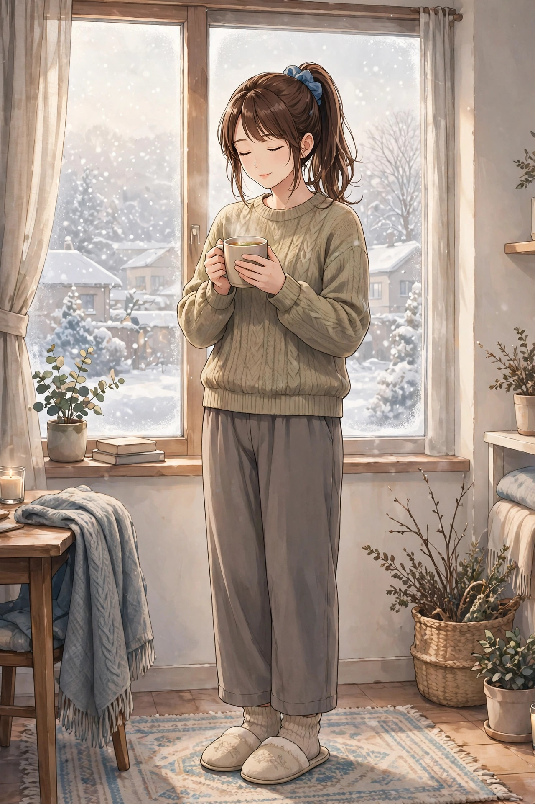

冬の便秘（水分不足と冷え）
女性のお悩みコラム 第8回｜ステラポラリス東三国

水分と温めで、冬の腸のリズムを整える
「冬になると、トイレのリズムが乱れやすくなった」「水分を摂る量が減って、お腹が張る感じがする」――寒い季節は、そんな声をよく聞きます。小雪を過ぎて朝晩の冷え込みが増すこの時期は、体が冷えないように水分を控えめにしたり、温かい室内で過ごす時間が長くなったりして、腸の動きもゆっくりになりがちです。冬の便秘は、意志の弱さではなく、水分・冷え・運動量のバランスが重なった結果です。このコラムでは、医学・東洋医学・アロマ・ハーブ・薬膳の5つの視点から、冬のお腹の仕組みを見つめ、無理なく続けられる過ごし方をご紹介します。
医学の視点：便秘は「水分・食物繊維・腸の動き」のバランス
便秘とは、排便の回数が減ったり、便が硬くなって出しにくくなったりする状態のことです。医学的には、週に3回未満の排便が続く場合や、残便感・お腹の張りが続く場合に「便秘」と呼ばれることがあります。腸の中では、水分が便のやわらかさを保ち、食物繊維が便のかさを増やし、腸のぜん動運動（腸が波のように動いて便を送り出す働き）が便を先へ進めます。冬は汗をかきにくくなるため、のどの渇きを感じにくくなり、水分を摂る量が自然と減りがちです。水分が少ないと便が硬くなりやすく、冷えで体が縮こまると腹部の筋肉も使いにくくなります。女性は男性に比べて腹筋が弱く、生理前にはホルモンの影響で腸の動きがゆっくりになることもあり、もともと便秘を感じやすい方が多いと言われています。医学の視点から見た冬の便秘対策の基本は、特別な方法を始めることではなく、「温かい水分をこまめに摂ること」と「体を動かす時間を少し増やすこと」です。朝起きて白湯を一杯飲む、階段を使う、食後に軽く歩く――小さな習慣の積み重ねが、腸のリズムを支えます。
東洋医学の視点：腸の潤いと巡り、脾と腎を温める
東洋医学では、便秘を「腸の潤い」と「巡り」のバランスから考えます。食べたものをエネルギーに変える働きを「脾（ひ）」が担い、体を温め、生命力の土台を支える働きを「腎（じん）」が担うと考えます。冬は腎の働きが大切になる季節とされ、体を冷やさないことが冬の養生の基本とされています。脾の働きが弱まると、食べたものがうまくエネルギーに変わりにくく、体が重だるく感じやすくなると考えられています。便秘のケアで知られるツボに「天枢（てんすう）」があります。おへその左右、指2〜3本分ほど外側にあるツボで、お腹の調子を整えるケアに広く使われてきました。もう一つは、腰のあたり、背骨から指2本分ほど外側にある「大腸兪（だいちょうゆ）」です。腰まわりを温めるケアのツボとして知られ、カイロを当てたり、手のひらで温めたりするのが一般的なセルフケアの方法です。いずれも、体が温まっているお風呂上がりの時間帯に行うと、心地よく続けやすくなります。お腹を時計回りに「の」の字を描くように、やさしくなでるマッサージも、朝の習慣として取り入れやすい方法です。
アロマの視点：香りでお腹まわりを温め、ほぐす時間に
アロマの楽しみは、香りをきっかけにお腹まわりを温め、リラックスする時間を作ることにもあります。フェンネルの精油は、甘く温かみのある香りが特徴で、食後のくつろぎ時間によく使われます。ジンジャーの精油は、ぴりっとした温かみのある香りで、冬の冷えが気になる時期に向いています。ペパーミントの精油はすっきりと清々しい香りで、気分を切り替えたいときに向いています。手軽な使い方は、植物油（ホホバオイルなど）10mlに精油を1〜2滴混ぜ、お腹を時計回りにやさしくなでるように塗る方法です。夜は、湯船に精油を1〜2滴落としてよく混ぜ、10分ほどゆっくり浸かるのもおすすめです。精油は原液を直接肌につけないこと、妊娠中の方や持病のある方、お薬を使っている方は使用前に専門家へ相談することなど、一般的な注意を守って楽しんでください。香りの好みには個人差があるので、まずは少量から試すのがおすすめです。
ハーブの視点：温かい一杯で内側から整える
ハーブティーは、温かい飲み物そのものが体を内側から温めてくれる、暮らしに取り入れやすい方法です。ごぼう茶は、香ばしい風味のノンカフェインのお茶で、食物繊維を含むごぼうを焙煎したものです。温かい一杯として、食事のお供にも向いています。ルイボスティーはノンカフェインで、夜のくつろぎ時間にも向いています。ペパーミントティーはすっきりとした香りで、食後のひと息に合います。ダンデライオン（たんぽぽ根）のお茶は、ほろ苦い風味が特徴で、コーヒーの代わりに楽しむ方もいます。キク科の植物にアレルギーのある方は、たんぽぽのお茶を避けてください。目安は1日1〜2杯。食後のくつろぎ時間や、仕事の合間のひと息に取り入れると、温かさと一緒に気持ちまでほぐれていく感覚を味わえます。冷たい飲み物が多い方は、まず朝の一杯を温かいハーブティーに変えることから始めてみてください。
薬膳の視点：食物繊維と発酵食品、温かい汁物
薬膳の考え方では、腸の調子を整えるには「食物繊維」と「発酵食品」、そして「温かい汁物」の組み合わせが向いているとされています。食物繊維を多く含む食材の代表は、ごぼう、きのこ類、海藻類、豆類、そしてさつまいもなどの根菜類です。冬の食卓では、温かいスープや煮物、鍋料理で根菜やきのこをたっぷり摂る工夫が向いています。発酵食品は、味噌、納豆、ヨーグルト、キムチ、ぬか漬けなどが代表的で、毎日の食事に一品添えるだけでも続けやすくなります。オリゴ糖を含む食材としては、玉ねぎ、バナナ、はちみつなどが知られています。もう一つ大切なのは「朝の水分」です。朝起きてすぐ白湯を一杯飲むと、眠っていた腸が目覚めやすくなると言われています。年末はごちそうの機会が増えますが、特別な食事制限をするのではなく、「温かい汁物を一品添える」「野菜のおかずを一品増やす」といった小さな工夫から始めるのがおすすめです。食事の時間はゆっくり取り、よく噛むことも、消化の負担を軽くする助けになります。
セルフケアのポイント
- 朝の白湯：起きてすぐコップ1杯（150〜200mlほど）。温かい白湯をゆっくり飲むことから1日を始めましょう。冷たい水より体が温まりやすく、腸の目覚めを助けます。
- 天枢と大腸兪を温める：1日1〜2回、親指で5秒押して離す動きを5回ほど。お風呂上がりの体が温まった時間帯が向いています。大腸兪は手のひらで温めるだけでもかまいません。
- お腹の「の」の字マッサージ：1日1〜2回、朝と夜に1〜2分ほど。おへそを中心に時計回りに、やさしく円を描くようになでます。力を入れすぎず、心地よい強さで行いましょう。
- かかとの上げ下げ運動：1日2〜3回、10回ずつ。台所仕事や歯みがきの合間に、その場でできる簡単な動きです。ふくらはぎの筋肉を動かすことが、脚の巡りを助けます。
- 温かい飲み物と食物繊維：1日1〜2杯のハーブティーと、根菜・きのこ・海藻を一品。温かい汁物を食事に添えて、体を内側から温めましょう。
当サロンでのケア
冬の便秘が気になる方には、お腹まわりを温め、全身の巡りを整えるケアが向いています。当サロンでは、全身をオイルで丁寧にゆるめるアロマオイルマッサージと、姿勢の土台を整える美容整体を組み合わせ、施術のあとに「体が温まった」「お腹まわりがすっきりした」と感じやすい状態を目指します。便秘と関わりの深いお悩みページもあわせてご覧ください。
受診の目安
冬の便秘の多くは、水分や食事のリズムによるものですが、中には医療機関への相談が向いている場合もあります。便に血が混じる、激しい腹痛が続く、急に体重が減った、便秘が2週間以上続いて市販薬でも変わらない、といった場合は早めに医療機関へご相談ください。また、吐き気や発熱を伴う場合も、早めの受診が向いています。気になる症状が続くときは、施術の前に医療機関でご相談いただくことをおすすめします。
施術者について
平賀建人（施術歴30年）
鍼灸師・登録販売者・アロマセラピスト・パーソナルトレーナーの資格を持ち、美容整体を中心に、アロマオイルマッサージ、もみほぐしを、その日の状態とご希望に合わせて組み合わせて施術します。このコラムは、施術者の知識と経験をもとに作成しています。
この記事で紹介したケアに使えるもの
PR（アフィリエイト広告を含みます）

腸内環境を整えるための食事、生活習慣、ストレス対策を、イラスト入りで広く整理した一冊です。記事の「水分・食物繊維・発酵食品」の参考に。

腸の中の細菌環境が消化や便通だけでなく、免疫や気分、肌の状態にまで関わっていることを、一般向けにわかりやすく整理した腸活の入門書です。
北海道産の黒豆と青森県産の黒ごぼうをブレンドした、ノンカフェインのお茶です。記事のハーブティーでご紹介したごぼう茶を、ペットボトルで手軽に楽しめます。温めて飲むこともできます。